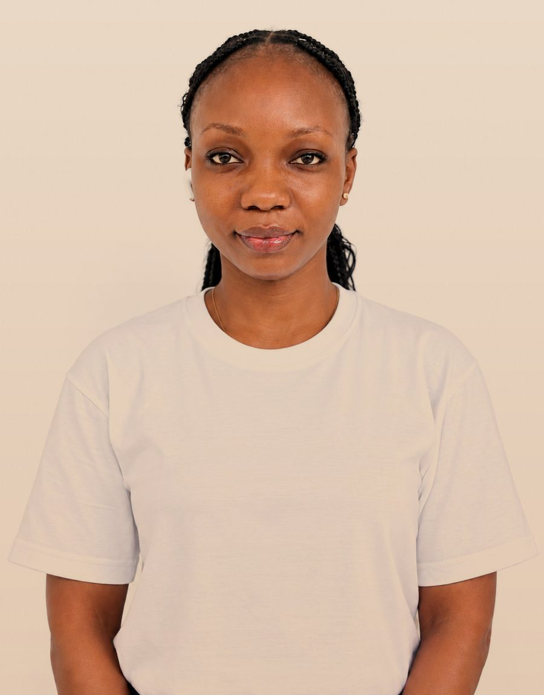
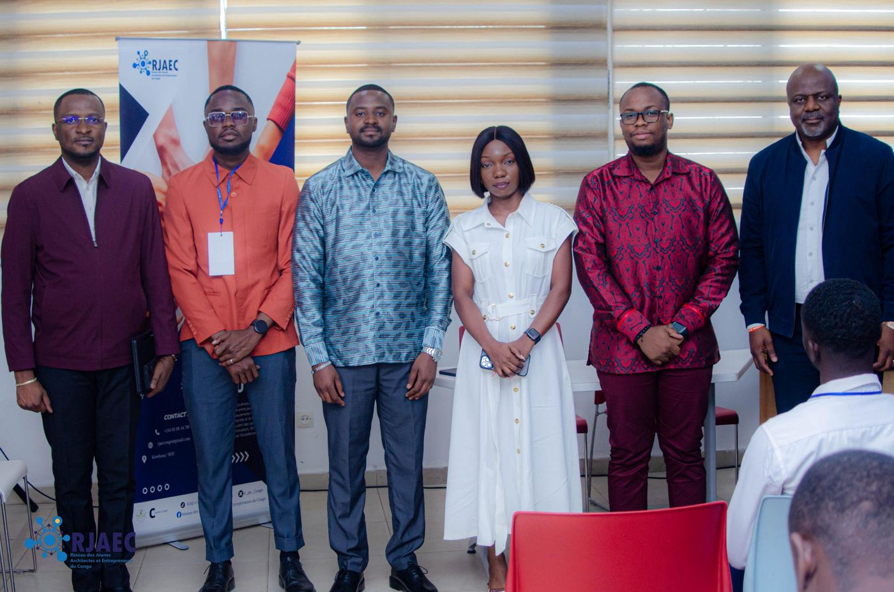
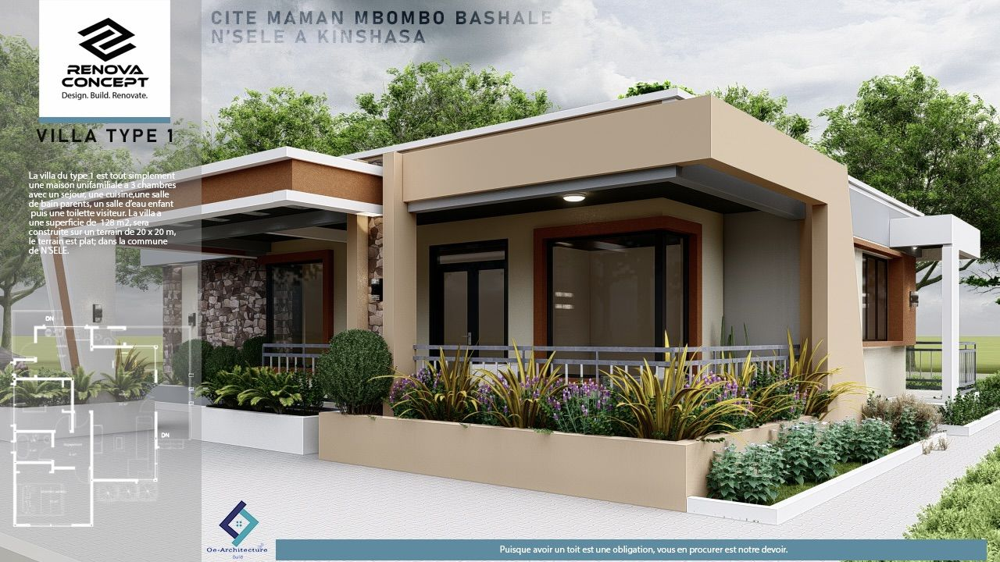
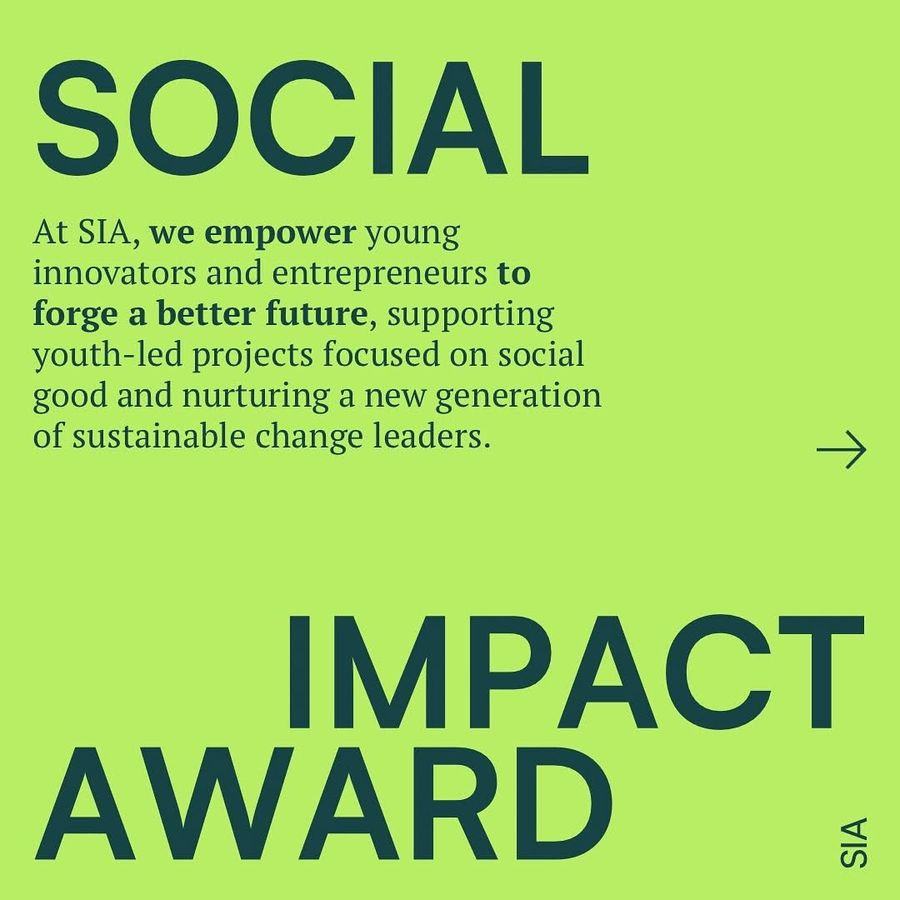
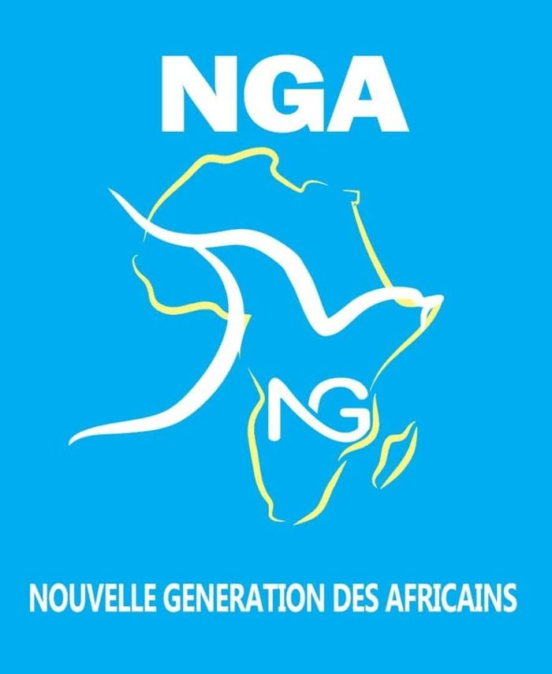
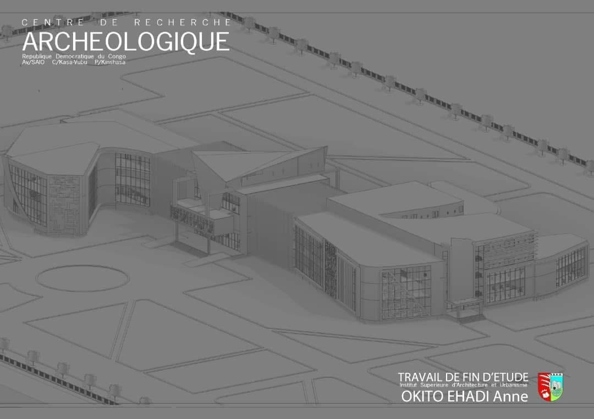
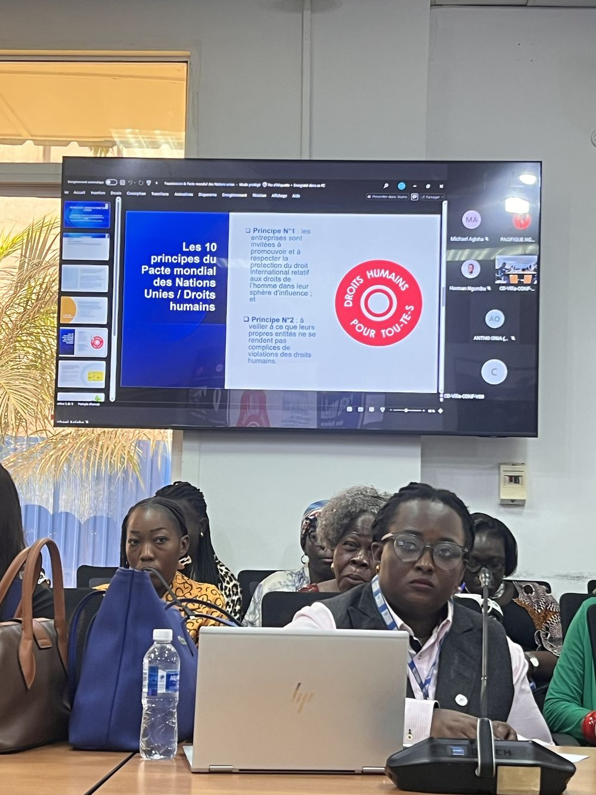

Architecture
Conception, plans d'exécution (Revit, BIM), suivi et contrôle de chantiers : de l'idée à la réalisation.
Kinshasa · République démocratique du Congo
Architecte, entrepreneure & acteur du numérique
Licenciée en architecture, fondatrice d'OE-Architecture et coordinatrice du RJAEC. Je mets l'architecture, l'innovation et le numérique au service du développement de mon territoire.

À propos
Contribuer au développement de mon territoire à travers l'architecture, le numérique, l'innovation et l'entrepreneuriat — là où la créativité, la collaboration et l'engagement des jeunes deviennent des leviers de transformation durable.
Architecte congolaise, je conçois et suis des projets avec une conviction : promouvoir une architecture qui valorise notre identité culturelle tout en répondant aux réalités et aux besoins de nos communautés. Je suis fondatrice d'OE-Architecture et initiatrice du Réseau des Jeunes Architectes et Entrepreneurs du Congo (RJAEC), dont je suis la coordinatrice.
Formée à l'ISAU de Kinshasa, j'ai développé mes compétences en marketing numérique avec le programme D-CLIC de l'OIF, et je poursuis une spécialisation en marketing digital 360°. Membre du Conseil des jeunes de Social Impact Award et passée par le programme YALI, je conjugue expertise, initiative et leadership pour des projets porteurs de sens.
Conception, plans d'exécution (Revit, BIM), suivi et contrôle de chantiers : de l'idée à la réalisation.
Marketing digital, création de contenu, stratégie de présence en ligne et vulgarisation du Code du Numérique.
Entrepreneuriat, coordination de réseaux et encadrement des jeunes pour un développement durable en Afrique.
Numérique
Au-delà du dessin d'architecture, j'utilise le numérique pour concevoir, communiquer et valoriser les projets : du modèle 3D à la campagne digitale.
Stratégies, conception et gestion de campagnes digitales. Formation D-CLIC (OIF, 2026) et spécialisation 360° en cours.
Contenus visuels et audiovisuels pour les plateformes numériques.
Plans d'action, budgets, plannings, suivi des indicateurs de performance (KPIs).
Présence en ligne et valorisation de projets sur les réseaux sociaux.
Réalisations

Cabinet que j'ai fondé : conception architecturale, études, exécution, suivi de chantier, rénovation et vente de matériaux de construction. Bâtir solide, vivre mieux !
Discuter d'un projet →
Un réseau que j'ai initié et que je coordonne pour fédérer, former et faire rayonner la jeune génération. Ensemble, construisons un monde meilleur !
Rejoindre le réseau →
Proposition d'aménagement de la nouvelle cité à N'sele (Kinshasa) : maison de 3 chambres sur 128 m², conçue lors de mon passage chez Renova Concept.
Voir mon parcours →
Membre du Conseil des jeunes d'un programme qui soutient les jeunes innovateurs porteurs de projets à impact social.
En savoir plus →
Encadrement des jeunes : renforcement des capacités et orientation, à Kinshasa.
Voir mon parcours →
Deux projets de fin de cycle conçus à Kinshasa : un centre archéologique (Kasa-Vubu) et un centre neuropsychiatrique (Ngaliema).
Voir ma formation →Expertises
Architecture, plomberie, électricité et construction : tracé avec Revit (BIM), études et analyses de projets.
Coordination, contrôle de conformité, réhabilitation et construction (centres de santé, banque, immeubles R+3 / R+4).
Stratégies, campagnes, présence en ligne et valorisation des projets sur les réseaux sociaux.
Contenus visuels et audiovisuels, plans d'action, budgets et suivi des indicateurs de performance.
Planification, coordination, suivi et évaluation ; développement d'initiatives entrepreneuriales.
Formatrice Revit, Excel, 3ds Max ; renforcement des capacités et orientation des jeunes.
Parcours
ONG, Kinshasa. Renforcement des capacités et orientation.
Formatrice du logiciel Revit, Excel, 3ds Max, promotion des services et publicités.
Tracé des projets et plans d'exécution avec Revit, contrôle et suivi des chantiers. Projets : site touristique à N'sele, immeuble appartement R+4 à Ngaliema, plans de plomberie et d'électricité d'un immeuble R+3 à Ngiri-Ngiri.
Tracé, conceptions, études et analyses, suivi de chantiers. Réhabilitation et construction des centres de santé AFIA EQUITY, réhabilitation d'une banque.
Conception, étude et tracé des projets ; proposition et aménagement de la nouvelle cité de Kalemie.
Conception, étude et tracé ; proposition d'aménagement de la cité Maman Mbombo Bashale (Kinkole) ; chargée du projet de construction d'un hôtel à Kinkole.
Institut Supérieur d'Architecture et d'Urbanisme (ISAU), Kinshasa/Gombe.
Institut Supérieur d'Architecture et d'Urbanisme (ISAU), Kinshasa/Gombe.
3 mois. Projet : conception d'un centre archéologique à Kinshasa, commune de Kasa-Vubu.
3 mois. Projet : conception d'un centre neuropsychiatrique à Kinshasa, commune de Ngaliema.
Organisation internationale de la Francophonie (OIF), en ligne.
PNUD · Ministère de l'Économie numérique · FIKIRI. Sélectionnée parmi 2 000 volontaires UNV-OnLine.
Activité d'assainissement à Kinshasa.
Orenburg, Russie.
Dakar, Sénégal.
Sotchi, Russie.
New York, en ligne.
ONG Vie Adorable, en ligne.
En ligne.

Contact
Okitoanne1@gmail.com · +243 81 08 34 719 · Kinshasa, RDC